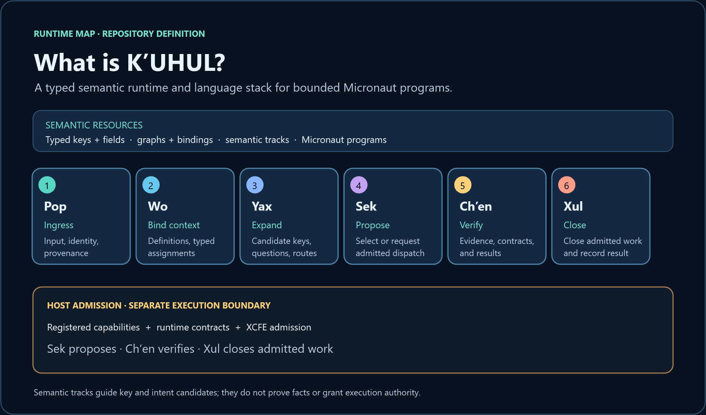

Semantic runtime · six gated phases
What is K’UHUL?
A typed semantic runtime and language stack for bounded Micronaut programs.
Follow a request through K’UHUL
Select a phase to see its role in the repository model.
K’UHUL
PHASE FIELDThe phase field turns continuously; choose a node or phase below to inspect it.

Pop · Ingress
Receive input and establish identity and provenance.
Repository definition from data/facts/kuhul-runtime.json and data/apps/kuhul-field.xaiml. The phase map is explanatory, not an execution grant.